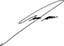

SRES: KOMPAS SRL
Nos dirigimos a Ustedes en representación de Caja de Seguros S.A., con el objeto de dar respuesta a vuestra solicitud de extensión de una constancia que les permita justificar fehacientemente ante quien corresponda, el estado de pago de los premios de la póliza N° 5160027337603
En tal sentido, les informamos que la póliza de referencia está adherida al débito automático de MACRO Suc.CENTRAL XXXXXXXXXXXXXXXXXX4841, tiene vigencia desde las 12hs del 31/08/2025 hasta las 12hs del 28/02/2026 y se encuentra con sus pagos al día y sin deuda exigible hasta el 28/11/2025 inclusive.
Sin otro particular, los saludamos muy atentamente.

Víctor Carpinelli
Jefe de Servicios de Cobranzas
Gerencia de Operaciones y Servicios
de Negocio